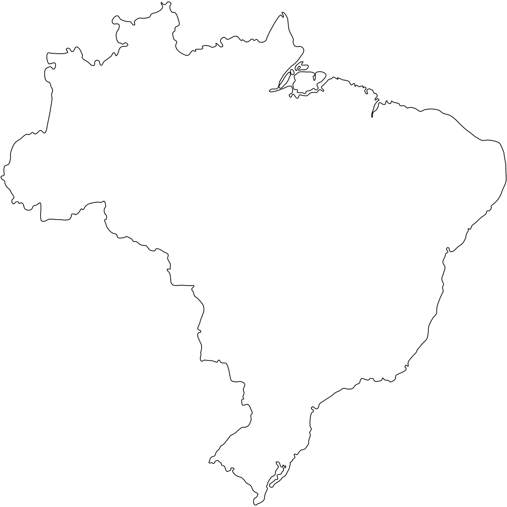

Localizações disponíveis
Limpeza de praia
Local: Praia do Espelho, Porto Seguro-BA
Horário do evento: 6h às 20h
Atividade: Limpeza de praia com instrutores.
Requisito: Não é necessário experiência.
Treinamento de mergulho para restauração de corais
Local: Praia da Baleia, Ubatuba-SP
Data: 07/06
Horário do evento: 9h às 11h
Atividade: Treinamento de mergulho para a restauração de recifes de corais juntamente da Marinha do Brasil.
Requisito: É necessário ter 6 meses de experiência como mergulhador.
Palestra sobre o cultivo sustentável de ostras
Local: Praia do Campeche, Florianólis-SC
Data: 15/06
Horário do evento: 7h às 10h e 15h às 18h
Atividade: Palestras com Dr. Pedro Andrade sobre o cultivo sustentável de ostras e como elas são necessárias para as praias. No final da palestra terá um brinde em homenagem à sustentabilidade.
Requisito: Livre para todos os públicos.